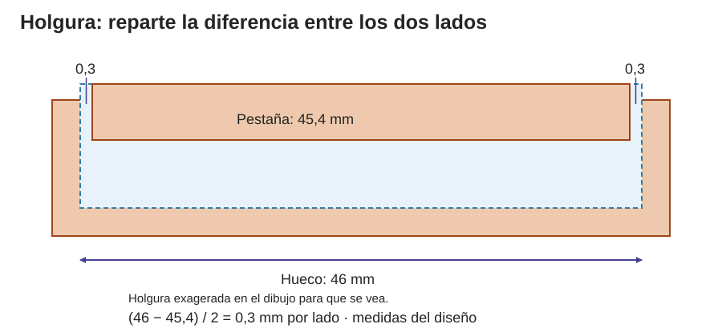
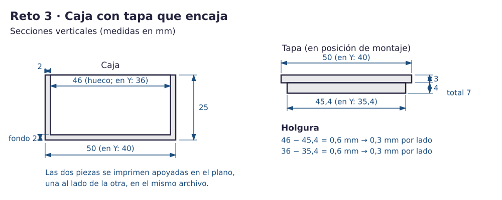
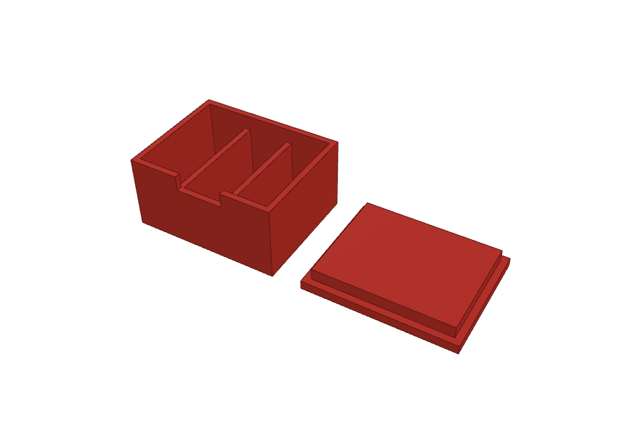
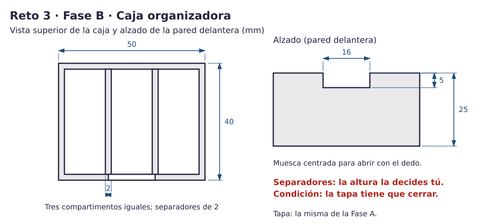
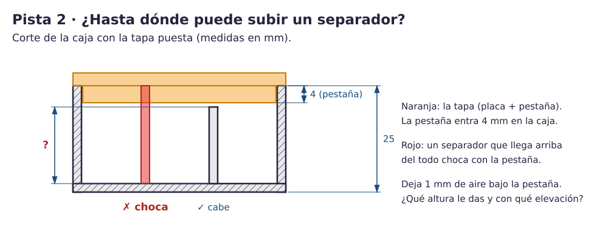

Contenido
Lo que vas a conseguir
Una caja con tapa. La tapa tiene una pestaña que entra en la caja. En la Fase A aprenderás qué es una holgura y cómo se diseñan dos piezas que encajan. En la Fase B convertirás la caja en un organizador con tres compartimentos, sin que la tapa deje de cerrar.
1. Para que encaje, hace falta holgura
Si la pestaña de la tapa midiera exactamente lo mismo que el hueco de la caja, no entraría: las piezas reales nunca salen perfectas. Hay que dejar un pequeño espacio, la holgura. Como la pestaña va centrada, ese espacio se reparte entre los dos lados.

Pruébalo. Cambia el tamaño del hueco y de la pestaña y mueve la pestaña: la holgura total no cambia, pero sí cómo se reparte.
2. El plano
En el plano verás la tapa montada, encima de la caja, que es como se usa. En Tinkercad la vas a construir boca arriba, con la pestaña hacia arriba y al lado de la caja.

| Pieza | Medidas |
|---|---|
| Caja | Exterior 50 × 40 × 25. Hueco 46 × 36 × 25 con elevación 2 (fondo y paredes de 2 mm). |
| Tapa: placa | 50 × 40 × 3, apoyada en el plano. |
| Tapa: pestaña | 45,4 × 35,4 × 4, centrada sobre la placa, con elevación 3. La tapa mide 7 mm en total. |
3. Fase A · Construye caja y tapa
Crea un diseño nuevo, llámalo reto3 y construye las dos piezas de la tabla, separadas unos 10 mm, la tapa boca arriba. Intenta hacerlo solo con la tabla; si te atascas, abre los pasos.
Pistas: los pasos uno a uno
- Caja: cubo de 50 × 40 × 25. Hueco de 46 × 36 × 25 con elevación 2. Alinea los centros de ancho y fondo y agrupa.
- Tapa: al lado de la caja, separada unos 10 mm, un cubo de 50 × 40 × 3 apoyado en el plano.
- Pestaña: cubo de 45,4 × 35,4 × 4 con elevación 3. Escribe la coma decimal (si el campo no la acepta, usa punto) y comprueba que se ve 45,40. Alinea la pestaña con la placa por los centros de ancho y fondo y agrupa.
- Comprueba: la caja tiene fondo (mírala desde abajo) y la tapa mide 7 de alto.
Piensa. ¿Por qué la tapa se diseña con la pestaña hacia arriba si luego se monta al revés?
Ver respuesta
Porque así se fabrica apoyada sobre su placa plana: cada capa se apoya en la anterior y nada queda en el aire. Para usarla, se le da la vuelta.
4. Comprueba la Fase A
- Caja de 50 × 40 × 25 con fondo (mírala desde abajo).
- Tapa de 7 de alto, con la pestaña de 45,4 × 35,4 centrada.
- Caja y tapa están separadas, en el mismo diseño.
| Si te pasa esto… | Prueba esto |
|---|---|
| La pestaña sale de 45 o de 46 | Vuelve a escribir 45,4 (o 45.4) y relee el número antes de seguir. |
| La tapa no se ve unida | La pestaña tiene que empezar en 3, justo encima de la placa. |
| Has escalado todo para que cuadre | No escales el conjunto: cambia la forma concreta y vuelve a medir. |
5. Fase B · Una caja organizadora
Fase B · sin pasos. La Fase A es lo que tiene que hacer todo el mundo. La Fase B es más difícil: solo tienes el plano y, si te atascas, unas pistas que se abren de una en una. Prueba primero sin abrirlas.
Qué cuenta para la nota. Con la Fase A de los tres retos bien hecha puedes llegar al nivel 3 (7,5). Para el nivel 4 hacen falta la Fase B de los tres retos y el reto 4. Usar las pistas no baja la nota.
Vas a añadir a la caja (la tapa no cambia):
- Dos separadores de 2 mm que formen tres compartimentos iguales.
- Una muesca de 16 × 5 en lo alto de la pared delantera, para levantar la tapa con el dedo.
El plano no te da la altura de los separadores. Solo una condición: la tapa tiene que cerrar.


Antes de empezar, guarda una copia. La Fase B se hace sobre el mismo diseño reto3, porque se entrega una sola pieza por reto: la más completa que termines. En tu panel de Tinkercad, pasa el ratón por el diseño reto3, pulsa el engranaje y elige Duplicar; llama a la copia reto3_A. Esa copia no se entrega: es por si algo se rompe.
Los separadores
Pista 1 · la idea
Por dentro la caja mide 46 de ancho. Ahí tienen que caber tres compartimentos iguales y dos separadores de 2. Primero calcula cuánto mide cada compartimento; después, dónde empieza cada separador.
Pista 2 · la tapa

Pista 3 · los números, para comprobar
- Compartimentos: (46 − 2 − 2) / 3 = 14.
- La pestaña ocupa de 21 a 25 dentro de la caja, así que el separador acaba en 20 (1 mm de aire).
- Con la Regla en la esquina de la caja: dos cubos sólidos de 2 × 38 × 19, elevación 1, en (16, 1) y (32, 1). Son 1 mm más largos y más bajos de lo justo para meterse en las paredes y en el fondo y quedar unidos.
La muesca
Pista 1 · la idea
Una muesca es un cubo hueco que muerde la pared desde arriba. Que sobresalga por fuera y por dentro, para que corte toda la pared.
Pista 3 · los números, para comprobar
Cubo en Hueco de 16 × 4 × 6, elevación 20, en (17, −1): corta de 20 a 25 en la pared delantera, centrado (17 + 16 + 17 = 50).
Comprueba la Fase B
- La caja sigue midiendo 50 × 40 × 25 y tiene fondo.
- Tres compartimentos de 14; los separadores tocan las paredes y el fondo.
- Los separadores acaban en 20: no llegan a la zona de la pestaña.
- La muesca mide 16 × 5 y está centrada en la pared delantera.
| Si te pasa esto… | Prueba esto |
|---|---|
| Los compartimentos no son iguales | Mide desde la Regla hasta el borde de cada separador: 16 y 32. |
| Un separador llega hasta arriba | Chocaría con la pestaña: que acabe en 20. |
| La muesca corta también la pared de atrás | El hueco es demasiado largo en fondo: 4, no 40. |
Tinkercad guarda solo. Todavía no exportes: entregarás los cuatro retos juntos al final del reto 4.